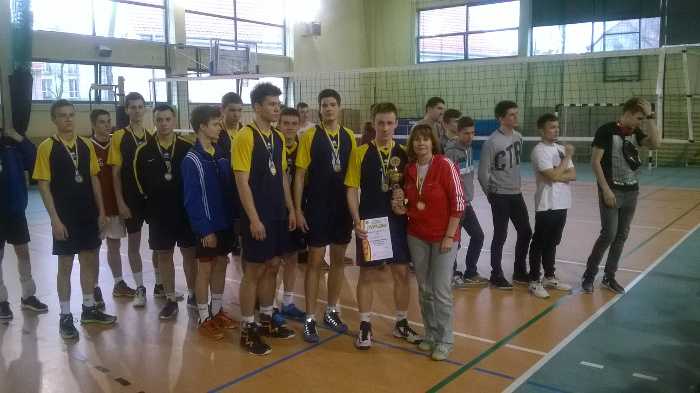

Gazeta ZSO nr II w Opolu
Numer 3/2017
Siatkarki i siatkarze na podium
 Złoty medal w Mistrzostwach Opola Szkół Ponadgimnazjalnych w siatkówce zdobyły dziewczęta z Dwójki. W turnieju finałowym Złotka w składzie Anastazja Świstun /3g/, Wiktoria Schichta /3g/, Paulina Karaś /3a/, Małgorzata Maciąg /2c/, Zuzanna Sajkiewicz /2h/, Adrianna Majnusz /3g/, Nikola Lubowicz /1f/, Anna Leśniewska /1a/ i Federica Kurbel / 1a/ pokonały Ekonomik, WZDZ, oraz ZSZ nr4. Wszystkie mecze zakończyły się wynikiem po 2:0. Drużyna PLO II zakwalifikowała się do rozgrywek wojewódzkich. Reprezentacja siatkarzy zdobyła srebrny medal. W grupie półfinałowej zawodnicy pokonali ZSZ im. St. Staszica 2:1 oraz ZSB 2:0. W finale spotkali się z zespołem Zespołu Szkół Elektrycznych, któremu ulegli po emocjonującym meczu 1:2 (w tie – breaku 13:15). Skład zespołu: Szymon Pietrek /3d/, Maciej Hemon /3d/, Jakub Młynarczyk /3c/, Piotr Bednarski /3a/, Piotr Pakosz /3g/, Łukasz Ledwig /2c/, Szymon Polewiak / 2g/, Mateusz Pająk /3a/, Bartosz Bednarzak /1c/, Marek Kanik / 2d/ i Michał Majewski /2d/. Trenerem obu drużyn jest Małgorzata Franek.
ul. Pułaskiego 3
45-048 Opole
tel. 077 45 422 86
fax 077 02 18 87
e-mail:
bez.tytulu@o2.pl
Ola Orłowska
DTP
Michał Woś
Opiekun
mgr Lucyna Rudnik
Ola Orłowska, Ania Cichy, Dagmara Cioska, Julia Nowicka, Julia Marcinów, Hania Szarzewicz, Michał Woś, Bartek Lipnicki, Jonasz Mularz, Paweł Kubacki, Mateusz Pietruszyński, Mateusz Orlik